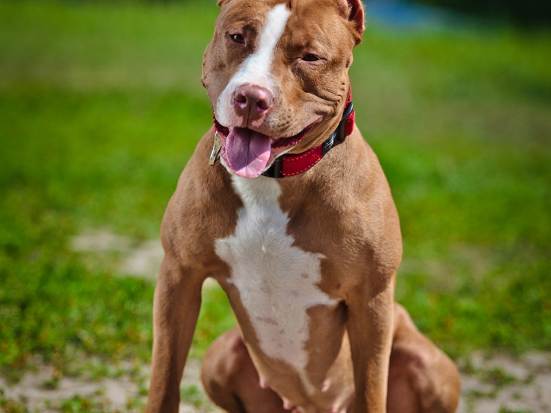

Top 10 melhores raças de cachorros
Vamos mostrar as melhores raças de cachorro :)
Acompanhe:
- Pug, cachorrinho lindo!
- Maltês, pelo muito bonito!
- Shih Tzu, lindo e com pelo fofinho!
- Buldogue, rosto de brigão mas é um amor!
- Pitbull, tudo só depende do dono!
- Spitz Alemão, cachorrinho de rico mas muito lindo!
- Salsicha, carinhoso e tem na casa de todo mundo!
- Pastor Alemão, serve pra tudo e é lindo!
- Basset, cão perfeito para companhia!
- Schnauzer, cão com barba!

"O cão é o melhor amigo do homem!"
"Só fala mal quem nunca teve"